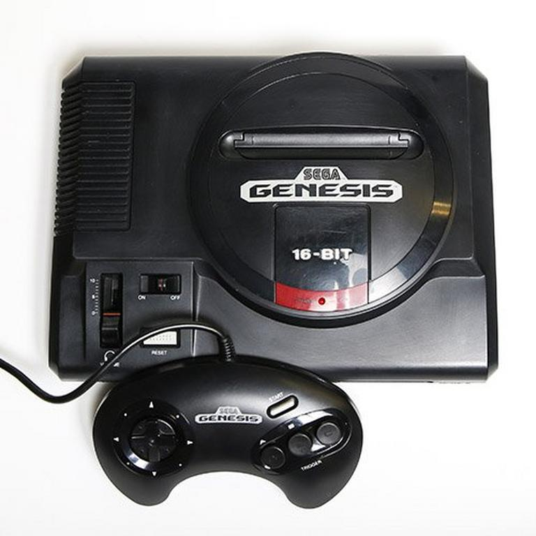

SEGA Genesis

The SEGA Genesis was introduced August 14, 1989. Designed by an R&D team supervised by Hideki Sato and Masami Ishikawa, the Genesis was adapted from Sega's System 16 arcade board, centered on a Motorola 68000 processor as the CPU, a Zilog Z80 as a sound controller, and a video system supporting hardware sprites, tiles, and scrolling. It plays a library of more than 900 games on ROM-based cartridges. Several add-ons were released, including a Power Base Converter to play Master System games. It was released in several different versions, some created by third parties. Sega created two network services to support the Genesis: Sega Meganet and Sega Channel.
The SEGA Genesis was introduced August 14, 1989. Designed by an R&D team supervised by Hideki Sato and Masami Ishikawa, the Genesis was adapted from Sega's System 16 arcade board, centered on a Motorola 68000 processor as the CPU, a Zilog Z80 as a sound controller, and a video system supporting hardware sprites, tiles, and scrolling. It plays a library of more than 900 games on ROM-based cartridges. Several add-ons were released, including a Power Base Converter to play Master System games. It was released in several different versions, some created by third parties. Sega created two network services to support the Genesis: Sega Meganet and Sega Channel.